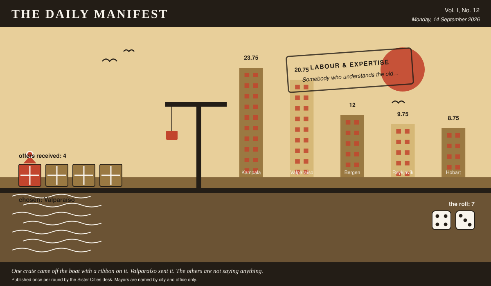

The Daily Manifest
All the news that fits in the hold.
Vol. I, No. 12 · Monday, 14 September 2026 · Price: unchanged since the first edition, which was also this week
Weather: wind from the harbour, opinions from everywhere.
Published once per round by the Sister Cities desk. Mayors are named by city and office only.

Wanted
The Wanted column is empty today, for the first time since this paper was founded, which was recently.
Every city on the register has had its turn to want something. The paper has checked the list twice and can find nobody left to ask.
Sealed Bids
No window closed today. The offers currently in transit remain in transit.
Arrivals
Chosen.
The winning offer for Bergen, reproduced exactly as it arrived:
A hillside's worth of paint, in colours the council will argue about for years.
Valparaíso sent it, and Valparaíso takes 7 — the dice said 4 and 3.
Three offers matched, sentence for sentence, an offer already printed with its sender named. The paper is not going to pretend it cannot see that, and has left the text out.
The Wire
Correspondence from the mayors, counted before it was quoted.
Correspondence received
This paper put the same question to every city hall: “If your city vanished overnight, where would you go?”
The postbag was empty. The paper has re-read the question and concedes it may have been a lot to ask on a busy round.
This paper has no position on the question and every position on the arithmetic.
The Ledger
Cumulative profit by city, as recorded by this paper's accountants, who are volunteers and say so often.
| # | City | Profit |
|---|---|---|
| 1 | Kampala | 23.75 |
| 2 | Valparaíso | 20.75 |
| 3 | Bergen | 12 |
| 4 | Reykjavík | 9.75 |
| 5 | Hobart | 8.75 |
Kampala leads, and has been gracious about it in a way this paper found slightly worse than gloating.
Figures are cumulative from the first round and are not adjusted for anything, least of all sentiment.
Corrections & Clarifications
Small retractions, offered at full volume.
- The masthead reads Vol. I, No. 12. There has never been a Vol. II and there is no plan for one.
- A reader asks how many people work at this paper. The answer is a matter for the paper's own conscience.
The Daily Manifest. Round 12. Offers for the current notice close 15 September, 09:00 UTC.